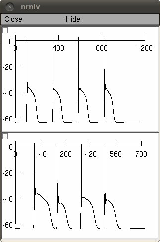

This is the readme for the model files associated with the papers: Masurkar AV, Chen WR (2011) Potassium currents of olfactory bulb juxtaglomerular cells: characterization, simulation, and implications for plateau potential firing. Neuroscience Masurkar AV, Chen WR (2011) Calcium currents of olfactory bulb juxtaglomerular cells: Profile and multiple conductance plateau potential simulation. Neuroscience These NEURON simulator files were contributed by Arjun Masurkar. Usage: Autolaunch from ModelDB or download, extract, and compile the mod files in the archive with nrnivmodl (unix), mknrndll (pc or mac) and start with the command "nrngui mosinit.hoc" (unix), double click on mosinit.hoc (windows), or drag and drop the mosinit.hoc file onto the nrngui icon (mac). Once the simulation has started: Press the button labeled "Figure 7c Marsurkar, Chen 2011 (Ca2+)" and after a few seconds you should see a graph like:  Alternatively Press Init & Run on the Run Control panel (might be buried under other windows) to run a single pulse simulation. 20120409 iCat1m3 mechansim updated from euler to cnexp as per http://www.neuron.yale.edu/phpBB/viewtopic.php?f=28&t=592